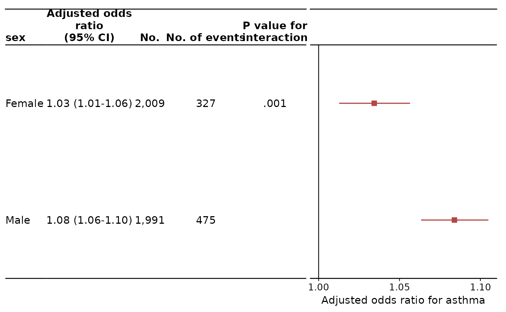
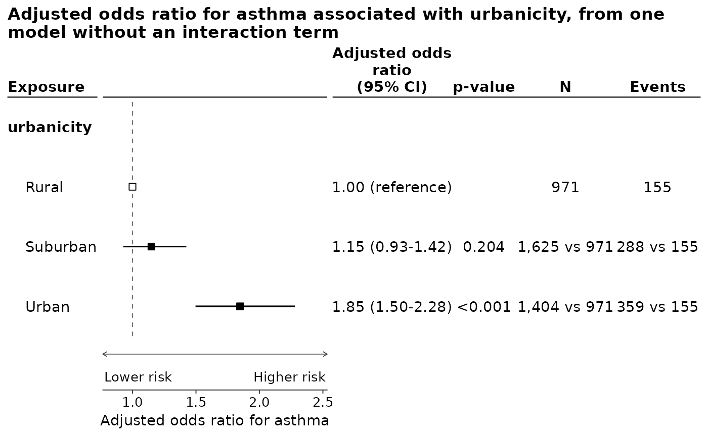

Every drawing decision the figure makes is held in one object: the colours,
the marks, the rules between the rows, how the numbers beside the plot are
written, and where the columns sit. Pass the name of a style to
foresty_main() or foresty_interaction() as layout = "jama", or build
one here and change any part of it.
Usage
foresty_layout(
style = c("classic", "jama", "nejm", "lancet", "bmj", "revman"),
base_size = NULL,
family = NULL,
colour = NULL,
colour_by = NULL,
colours = NULL,
theme = NULL,
palette = NULL,
point_shape = NULL,
point_size = NULL,
emphasis_shape = NULL,
emphasis_height = NULL,
emphasis_size = NULL,
emphasis_face = NULL,
emphasis_gap = NULL,
interval_width = NULL,
null_line = NULL,
grid = NULL,
axis_line = NULL,
band = NULL,
rules = NULL,
separators = NULL,
group_position = NULL,
table_side = NULL,
header_face = NULL,
group_face = NULL,
digits = NULL,
p_format = NULL,
decimal_mark = NULL,
ci_separator = NULL,
ci_brackets = NULL,
column_gap = NULL,
headings = NULL,
xlim = NULL,
arrows = NULL,
arrows_position = NULL,
plot_width = NULL,
auto_labels = NULL
)Arguments
- style
Name of the style to start from, one of
"classic","jama","nejm","lancet","bmj"and"revman". Aforesty_layoutobject is also accepted, and is then the thing being modified.- base_size
Base font size in points. Everything else is drawn relative to it.
- family
Font family, as
"serif"or"Times New Roman".NULLleaves the device's default.- colour
One colour for the estimates and their intervals, which is the usual thing to change.
palettechanges them apart, andcolour_bydraws the rows in colours of their own instead.foresty_colours()names a colour of a ColorBrewer palette without pasting a hex code, ascolour = foresty_colours("Dark2")[3].- colour_by
What the colours change with, for a figure drawn in more than one.
"none", the default, draws the whole figure incolour."category"gives every category of the rows a colour of its own: the levels of a categorical exposure – "Yes" and "No" – where the rows are levels, and the subgroups of the modifier where they are subgroups, which is what an interaction figure draws. A category keeps its colour wherever it appears, so a combined figure reads across its blocks."row"gives every row a colour, whatever it is of. The reference level of a categorical exposure is drawn hollow either way, being a definition rather than an estimate. No legend is drawn: every row is labelled already, and a legend repeating the labels is a second copy of them to keep in step.- colours
The colours
colour_bydraws the categories in, in order, and cycled where there are more categories than colours. The name of a ColorBrewer palette –"Dark2", the default,"Set1"or"Set2"– or the colours themselves, asc("#1B9E77", "#D95F02").foresty_colours()builds one starting from a chosen place in a palette, ascolours = foresty_colours("Dark2", start = 3).- theme
The
ggplot2theme the plot itself is drawn on:"void", the default, which is the plain panel a forest plot is usually drawn as, or the name of one ofggplot2's own –"minimal","bw","classic","light","linedraw","grey"or"dark"– for its background, its border and its grid. A theme object or a theme function is also accepted. It is the plot's theme, not the figure's: the columns of numbers beside it are a table rather than a plot and keep their own. Everything the layout sets – the sizes, the colours of the text, whether the axis line and the grid are drawn – is applied over it, sogrid = TRUEandtheme = "bw"are not two answers to the same question.- palette
Named character vector overriding single colours, as
c(estimate = "#B24745", null = "grey60"). The names areestimate,border(the outline of the marks),reference(the fill of the reference level's hollow mark),interval,null,rule,band,text,header,groupandaxis.- point_shape, point_size
Plotting symbol and its size. The default is a filled square, as a forest plot is usually drawn with.
- emphasis_shape, emphasis_height, emphasis_size, emphasis_face
How a row singled out for emphasis is drawn – the overall estimate on a
foresty_combine()figure, which a reader should be able to find without hunting for it.emphasis_shapeis a plotting symbol, and the row is drawn as the other rows are – a mark on an interval – in that symbol atemphasis_size, which may be leftNULLforpoint_sizetimes 1.5. The default,23, is the filled diamond, which says the row is the summary while leaving its interval to be read as the others are.emphasis_shape = "diamond"draws instead the wide summary diamond a paper draws: a filled diamond whose two side vertices sit on the confidence limits and whose apex sits on the estimate, drawn in place of the interval rather than on top of it.emphasis_heightis how tall that diamond is, as a fraction of the space between one row and the next, andemphasis_sizesays nothing about it.emphasis_faceis the font face of the row's label, and applies either way.- emphasis_gap
Whether a row singled out for emphasis is set apart from the rest by a rule of its own, drawn whether or not
separatorsrules between subgroups, so that the overall estimate is read as its own thing rather than as another subgroup.- interval_width
Line width of the confidence intervals.
- null_line
Line type of the line at the null, as
"dashed"or"solid"."none"draws none.- grid
Whether to draw vertical grid lines behind the estimates.
- axis_line
Whether to draw the axis line under the plot.
- band
Whether to shade alternate rows, which helps a reader carry the eye across a wide table of numbers.
- rules
Where to rule the figure:
"header"draws a line under the column headings,"full"adds one above them and one under the last row, and"none"draws neither.- separators
Whether to draw a thin rule between one subgroup and the next.
- group_position
Where the name of a subgroup goes:
"row"puts it on a row of its own above the rows it covers, and"column"puts it in a column of its own to the left of them.- table_side
Which side of the plot the numbers are written on,
"right"or"left".- header_face, group_face
Font face of the column headings and of the subgroup names, as
"bold"or"plain".- digits
Digits the estimates are written to.
- p_format
How p-values are written.
"default"writes0.032and<0.001;"jama"drops the leading zero and rounds as JAMA asks, to three places up to0.01and two above it.- decimal_mark
Decimal point,
"."unless a journal asks otherwise.- ci_separator
What goes between the confidence limits. The default picks
"-"when every number on the figure is positive and" to "when one is not, a hyphen between negative numbers being unreadable.- ci_brackets
The pair of brackets the interval is written in, as
c("[", "]").- column_gap
Space between one column of numbers and the next, in ems, an em being about two digits wide. Lower it to draw the numbers tighter and leave the plot more of the figure.
- headings
Named character vector renaming the column headings, as
c(n = "No. of patients"). The names areestimate,label,p,n,events,person_time,interaction_p, andinteraction_p_waldandinteraction_p_lrtfor a figure reporting both tests of the interaction. The estimate's heading is written from the model, naming the measure and the confidence level; the outcome is named on the axis under the plot rather than twice over.labelheads the column of row labels, and defaults to"Exposure"inforesty_main(), the modifier's name inforesty_interaction()and"Subgroup"inforesty_combine(), which leaves it unheaded when the figure carries an overall estimate as well as subgroups.- xlim
Limits of the plot, as
c(0.5, 4). Intervals running past them are drawn with an arrow at the end, which is what keeps one wide interval from flattening the rest of the figure.- arrows
Two labels for the directions of the effect, as
c("Favours treatment", "Favours control"), drawn under the plot with an arrow apiece.NULLdraws none.- arrows_position
Whether those labels go at the
"bottom"of the plot or at the"top".- plot_width
How much of the figure the plot itself takes.
NULL, the default, gives it whatever the columns of text leave, so that widening the figure widens the plot and nothing else. A fraction, as0.6, gives it that share of the figure whatever the figure is drawn at, and the columns of text share the rest. A number of centimetres, or agrid::unit(), fixes it exactly.- auto_labels
Whether
foresty_interaction()writes its own title and subtitle. The journal styles leave them off, since that text belongs in the caption; a title passed by hand is always drawn.
Details
The styles are the ones a paper is usually asked for, read off the forest
plots those journals print and the layouts of the meta package, which
foresty follows here. They are approximations of a house style, not the
style sheet itself: a journal will still ask for its own fonts and sizes,
and every element below can be overridden.
"classic"The default. Black marks on white, a dashed line at the null, a rule under the column headings and thin rules between subgroups.
"jama"Numbers to the left of the plot, rules above and below the whole block, navy squares, a solid line at the null, p-values without their leading zero (
.03,<.001), and "No." and "P value" as headings. The title and subtitle thatforesty_interaction()writes for itself are left off, the caption being where a journal puts them."nejm"Numbers to the right, blue squares, en dashes between the confidence limits, "P value" as the heading.
"lancet"As
"nejm", in the Lancet's blue, with the middle dot for a decimal point, so that 1.17 is written with one, and en dashes."bmj"The BMJ's violet, grey rules, and "to" between the confidence limits.
"revman"Cochrane's RevMan: blue squares and intervals written
1.15 [0.93, 1.42].
Examples
fit <- glm(asthma ~ no2 + sex + maternal_smoking + maternal_age,
family = binomial, data = foresty_cohort)
foresty_interaction(fit, "no2", "sex", table = TRUE, layout = "jama")
 # A style, changed where it needs to be.
foresty_interaction(
fit, "no2", "sex", table = TRUE,
layout = foresty_layout("jama", colour = "#B24745", base_size = 11)
)
# A style, changed where it needs to be.
foresty_interaction(
fit, "no2", "sex", table = TRUE,
layout = foresty_layout("jama", colour = "#B24745", base_size = 11)
)

# Trimming a wide interval rather than letting it flatten the figure.
fit_urban <- glm(asthma ~ urbanicity + sex + maternal_age,
family = binomial, data = foresty_cohort)
foresty_main(list(fit_urban), "urbanicity", table = TRUE,
layout = foresty_layout("classic", xlim = c(0.8, 2.5),
arrows = c("Lower risk", "Higher risk")))
